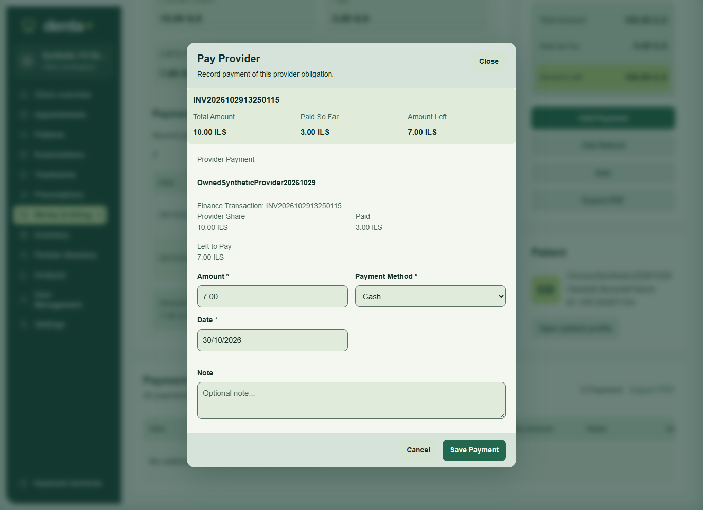
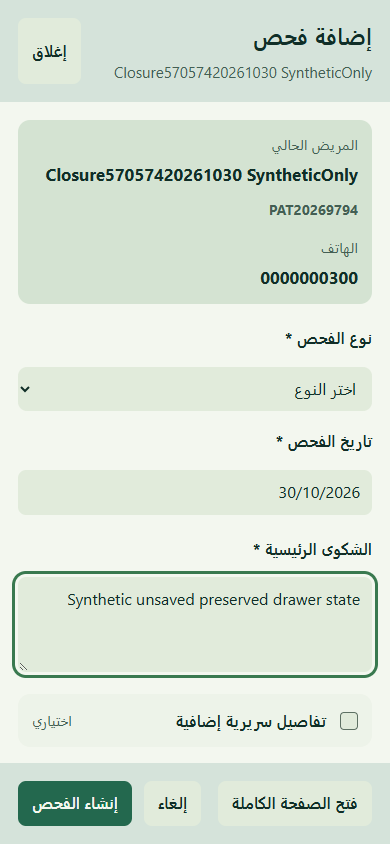

Provider payment context ? English desktop
Actual existing synthetic allocation: original10ILS, ledger payments2+1=3, outstanding7. Dialog opened/cancelled; focus restored. No payment submitted in this check.

Actual disposable synthetic CI4 application. No production data. These are interaction-state samples, not complete visual/workflow acceptance.
Release decision and limits ? Sanitized actual checks
Actual existing synthetic allocation: original10ILS, ledger payments2+1=3, outstanding7. Dialog opened/cancelled; focus restored. No payment submitted in this check.

Entered text survives close/reopen; Escape and focus return verified. A separate explicit contextual submission persisted examination1152 and returned to patient28. No change to examination business logic.
